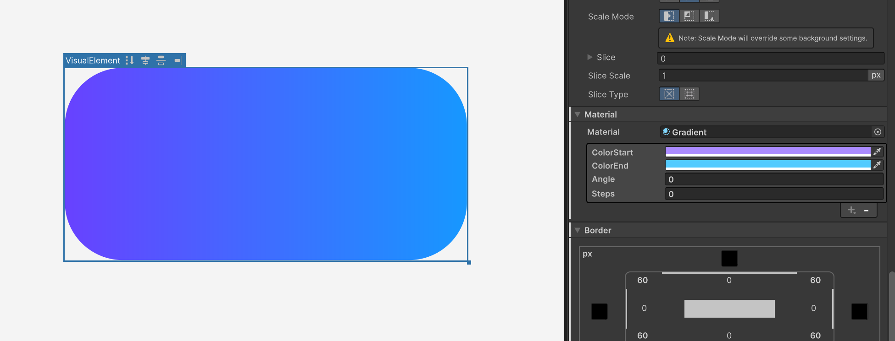
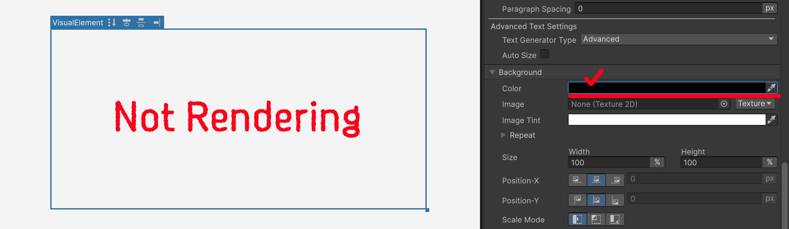

Gradient Material
The gradient is a custom material applied with -unity-material, not a filter. It fills an element's background with a gradient between two colors.

Properties
| Property | Description |
|---|---|
_ColorStart |
Start color of the gradient |
_ColorEnd |
End color of the gradient |
_Angle |
Gradient angle in degrees. 0 is left → right |
_Steps |
Softness of the color transition. Lower values give a sharp, hard-edged boundary between the two colors; values closer to 150 produce a smoothly blended gradient. The range is 1–150 and the default is 150. |
Notes
Because the gradient material behaves differently from filters, there are a few things to watch out for.
1. The material alone won't display anything
Assigning the material by itself doesn't make the gradient appear. The gradient shader draws by multiplying its color over the element's background, so with no base fill to multiply against, nothing shows.

Set Background > Background Color in the Inspector to opaque white (1, 1, 1, 1). A white base is required for the gradient to appear at its true colors. If the background color's alpha is 0, Unity doesn't generate the background mesh at all, so the gradient isn't drawn either.

2. The material is inherited by child elements
-unity-material is an inherited property. If you place a Label or another VisualElement as a child of an element that uses the gradient material, UI Builder binds the parent's material to the child as well. As a result the child is painted with the same gradient at the same position, which can look as if the child isn't being rendered.
To keep a child free of the gradient, set -unity-material: none; on the child element.


3. The material gradient does not draw a Border
When the gradient is applied through the material, the Border > Color set in the Inspector does not render as intended. If you need a solid outline on a gradient element, leave the Border color and width empty and use the Outline filter instead.